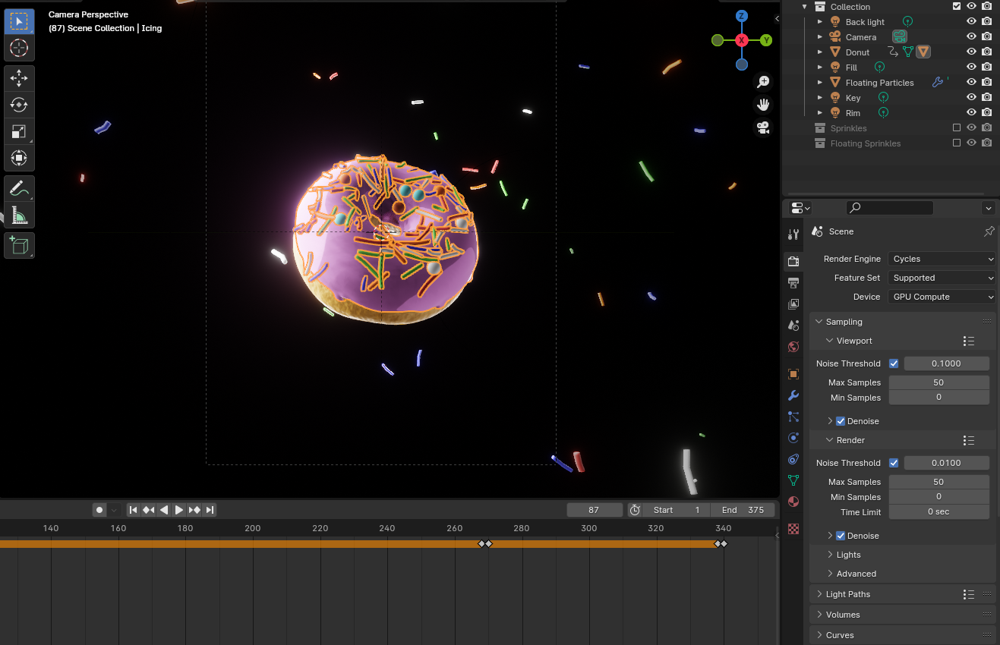
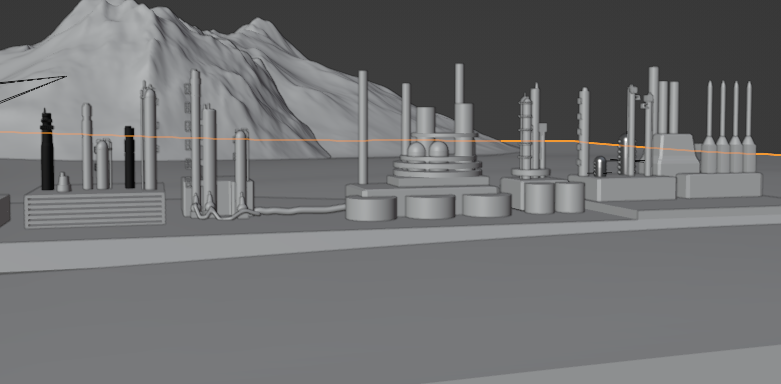
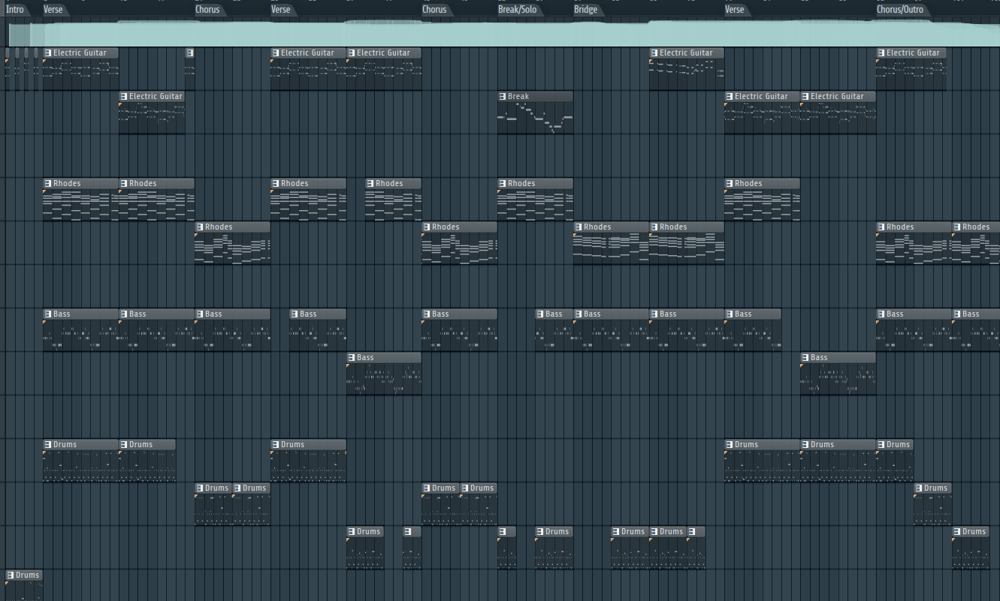
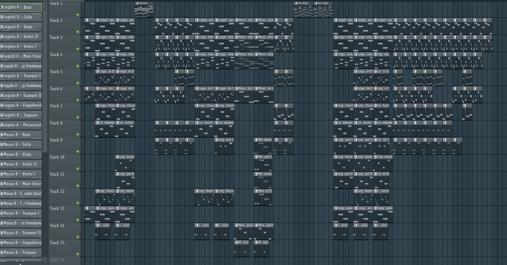

Other Projects
Aside from game development and programming, I also compose music on FL Studio and make 3D models in Blender
Blender Projects
In Blender I have utilized 3d modeling to create various assets and models for both my games and other projects, including the oil refinery pictured as part of an environmental campaigning project
 Music Projects
I've experimented in creating many different genres of music in FL Studio, and working on composition, mixing, and my music theory. I have made songs for thematic and genre challenges, alongside having made some music to accompany my in progress game development project.
 